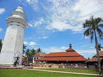

TENTANG
KOTA
SERANG
Kota Serang adalah ibu kota Provinsi Banten, Indonesia. Kota ini berada di bagian utara
Provinsi Banten, serta dikelilingi oleh Kabupaten Serang di sebelah selatan, barat, dan
dan timur, dan Laut Jawa di sebelah utara. Kota Serang dilintasi jalan tol lintas
Jakarta-Merak. Kota Serang dan daerah sekitarnya terhitung istimewa secara budaya karena
disini dipertuturkan Bahasa Jawa Serang atau Bahasa Jawa Banten.
wisata kota serang

Masjid Agung Banten adalah salah satu masjid tertua di Indonesia yang penuh dengan nilai sejarah. Setiap harinya masjid ini ramai dikunjungi para peziarah yang datang tidak hanya dari Banten dan Jawa Barat, tetapi juga dari berbagai daerah di Pulau Jawa. Masjid ini dikenali dari bentuk menaranya yang sangat mirip dengan bentuk sebuah bangunan mercusuar.
Masjid ini dibangun pertama kali pada 1556 oleh Sultan Maulana Hasanuddin (1552-1570), sultan pertama dari Kesultanan Banten. Ia adalah putra pertama dari Sunan Gunung Jati.
Masjid Agung Banten terletak di Desa Banten Lama, tepatnya di desa Banten, sekitar 10 km sebelah utara Kota Serang. Akses ke lokasi dapat dituju dengan kendaraan pribadi atau kendaraan umum. Dari terminal Terminal Pakupatan, Serang menggunakan bis jurusan Banten Lama atau mencarter mobil angkutan kota menuju lokasi selama lebih kurang setengah jam.